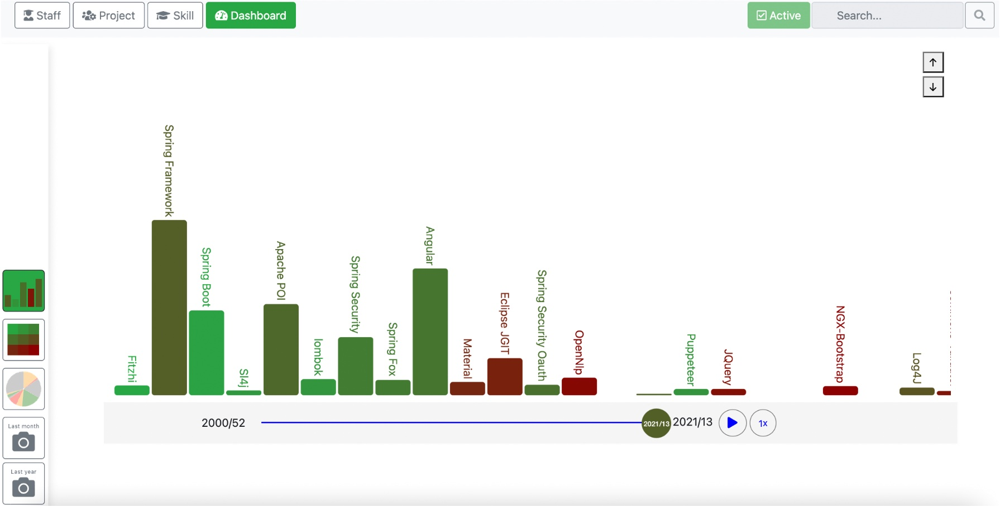

|
You can test Fitzhi on a sandbox platform which is available here. The sample portfolio is the ecosystem of ©Fitzhì.
All open-source projects involved in Fitzhì, and available on Github, are declared in the repository.
The first launch will start the setup process. You just have to follow the assistant.
|
 |